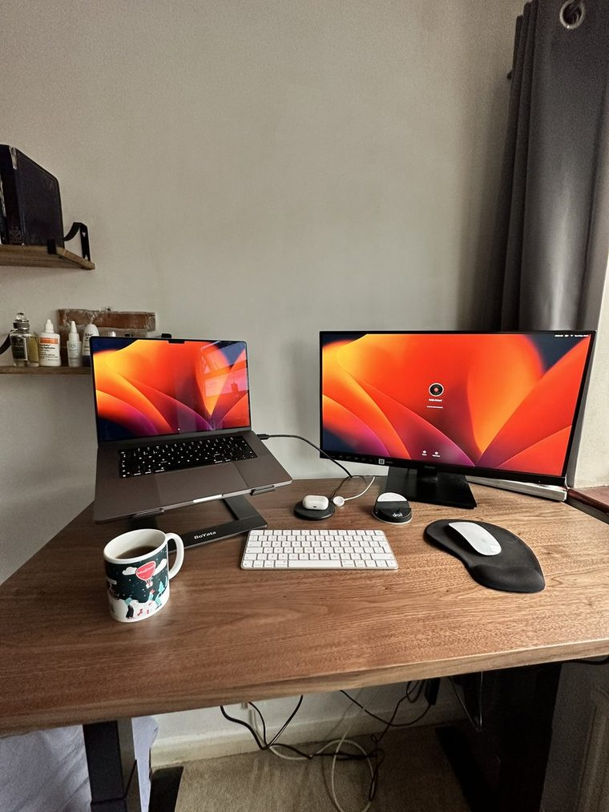

The best thing I did at Goldman Sachs was talk my way onto someone else's janky side project. Mehti prayed next to me every day. One afternoon on the way out I asked how it was going. I meant it as a greeting. He heard it as a question about his startup, and started telling me everything. He'd…
MiniDeed
2018 – 2021
A social app where every like was worth a penny to charity. My first company, built while I was an apprentice at Goldman Sachs.
- £26kraised, all of it to charity
- £0revenue, ever
- 25countries
What I say about it now, and what I was actually posting at the time.
It started in a basement prayer room. Mehti prayed next to me every day at Goldman and one afternoon on the way out I asked how he was doing. I meant it as a greeting. He heard it as a question about his startup and told me everything.
The idea was simple enough to explain in one line, which is usually a good sign. You see a cause, you feel helpless, all you can do is raise awareness. So we made the awareness itself worth something.
You ever see a cause on social media and feel helpless because the only thing you can do is just raise awareness? That’s why we created MiniDeed, an app where you raise money for the causes you care about by creating posts and donate pennies to other causes!
I was eighteen and had no idea what I was doing, so I just kept showing it to people until something happened. It went international well before it went anywhere near profitable.
never I thought I’d read minideed praise in another language in just 2 month but we’re already here. MiniDeed is going international! 🇮🇹 ✈️
Having a lot of fun presenting @MiniDeed at @FFWDLondon. Been sharing your comments and ideas, they love it! Keep it up!
The best thing about it was never the money. People started using it to talk about things they were struggling with, and it turned into a place I did not design.
MiniDeed is really precious tonight with all the wonderful MiniDeeders sharing their mental health struggles with the #MiniStruggle hashtag. I love the safe space it’s creating for people to open up in this way
Then the number that still surprises me. Twenty five countries and £26,000, raised entirely through likes, by people who mostly had never donated to anything before.
This MiniDeed journey has been amazing thank you all you MiniDeeders that have joined us on this journey this year. Without you we couldn’t have reached over 25 countries and raised £26k through just likes ♥️ 2021 is about to be even better with you guys you’re not ready...
Here is the part I got wrong. We removed follower counts because we thought they were toxic. People churned, because we had taken away the thing they came for. You cannot opt out of the attention economy by pretending it is not there. That mistake cost me three years and it is the foundation of everything I do at Draper now.
We raised £26,000 for charity through an app where every like was worth 1p. We made exactly £0 in revenue. I was 18. First year of my degree apprenticeship at Goldman Sachs. I met the co-founder in the basement prayer room. We'd just finished praying and I asked him how he was doing, just being…
It still takes donations daily, years after we stopped touching it. Sadaqah jariyah beats MRR. I kept the mug.
In love with my new desk 😍 ft my minideed mug

Lately
- 20 May 2026 Content is product. Product is content. I've said it maybe 200 times now. Most founders nod and then go do the opposite anyway. We… 36
- 24 Sep 2024 sadaqah jariyah impact metrics by far gives you a bigger serotonin boost than growing any MRR or ARR the most fun I've had building… 18
- 12 Apr 2024 I miss building in social media man, my time at minideed was so fun 7
- 4 Mar 2024 This but when at minideed we introduced following profiles but with no following/follower counts because people felt that was toxic… 8
- 5 Apr 2021 Just going about our day and we see that @MiniDeed has just featured on Mvslim as the 1st of 5 best apps to download in Ramadan! 30
- 3 Apr 2021 Hey guys, we’re looking for MiniDeeders who would be willing to record a short selfie video of them talking about MiniDeed and our… 2
- 2 Apr 2021 I always envisioned a keynote for MiniDeed one day 😂, had the idea that we would do one when we release something big, it’s nice… 6
- 30 Mar 2021 While I’m here I’m just going to post the cappuccino I had with my lovely @MiniDeed mug I got a few weeks back. Probably my… 16